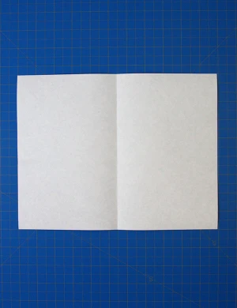
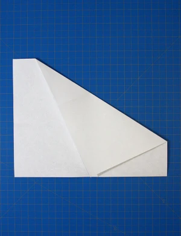
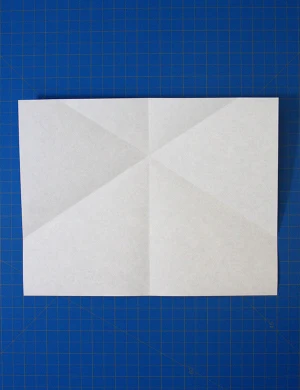
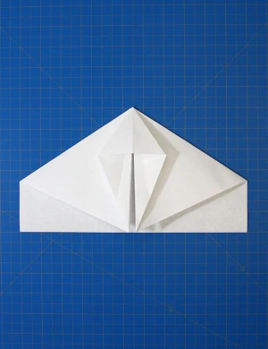
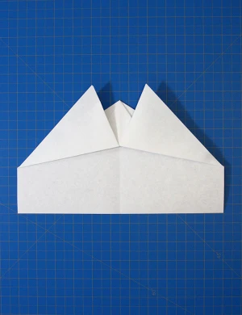
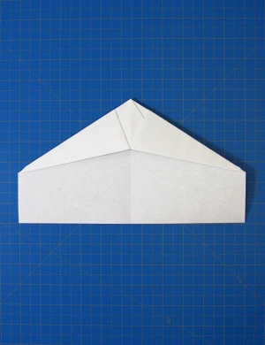

1步骤 1
Holding the paper sidesways, fold the paper in half and unfold.

Holding the paper sidesways, fold the paper in half and unfold.

Fold down the top right corner down to the end of the crease you just made.

Open the last fold and repeat with the other side to get the creases shown.

Next, accordion fold the two corners in and the center out to get this diamond shape.

Fold the front two flaps up.

Continue folding the two flaps behind the top edge.